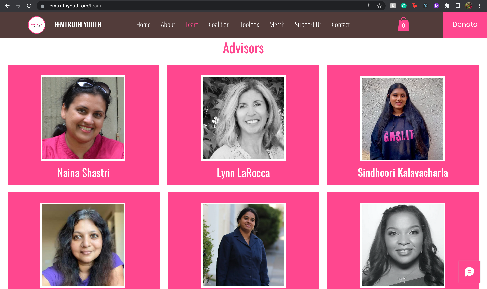
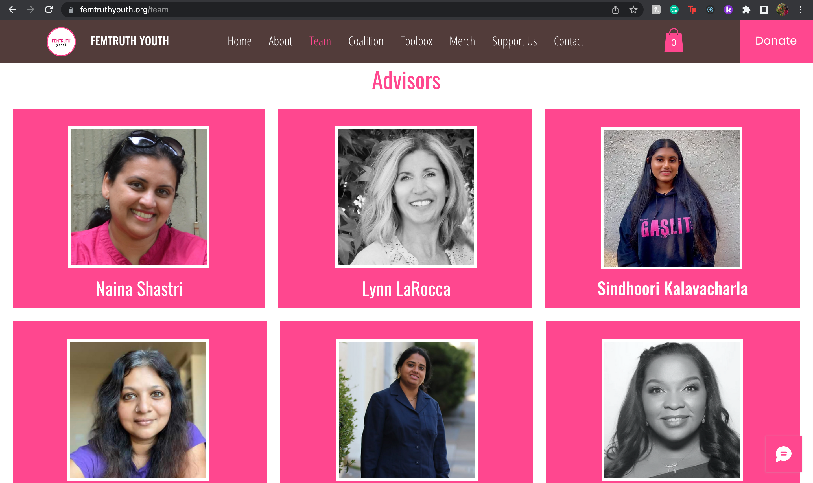
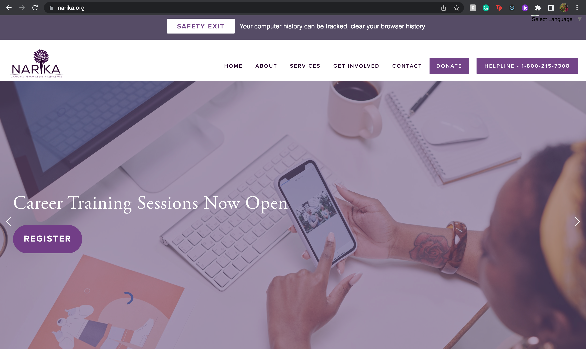
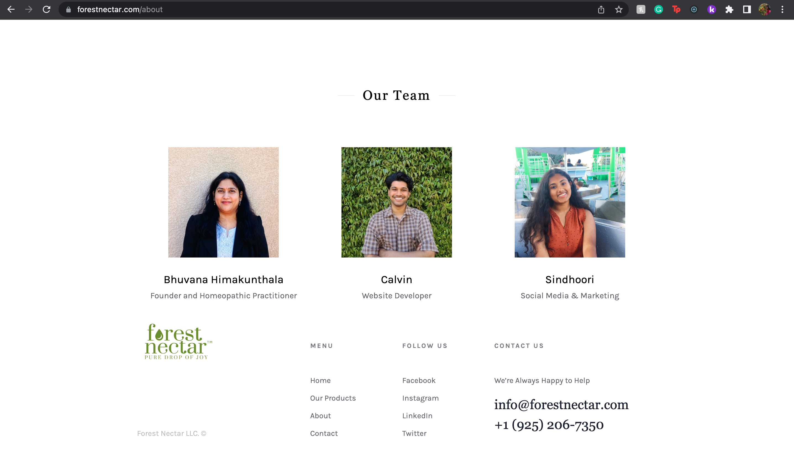
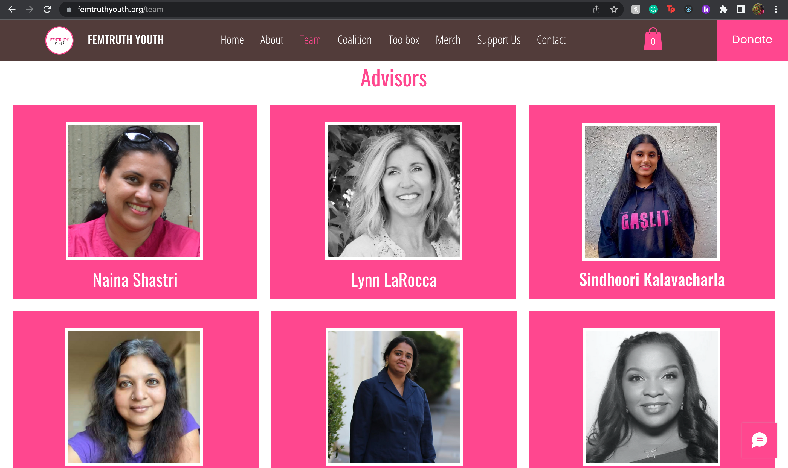
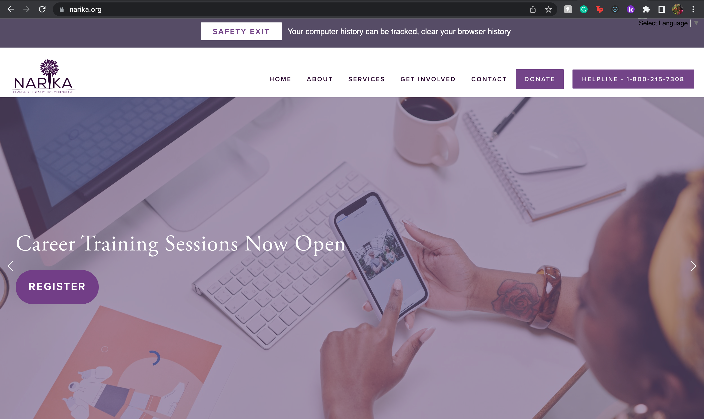
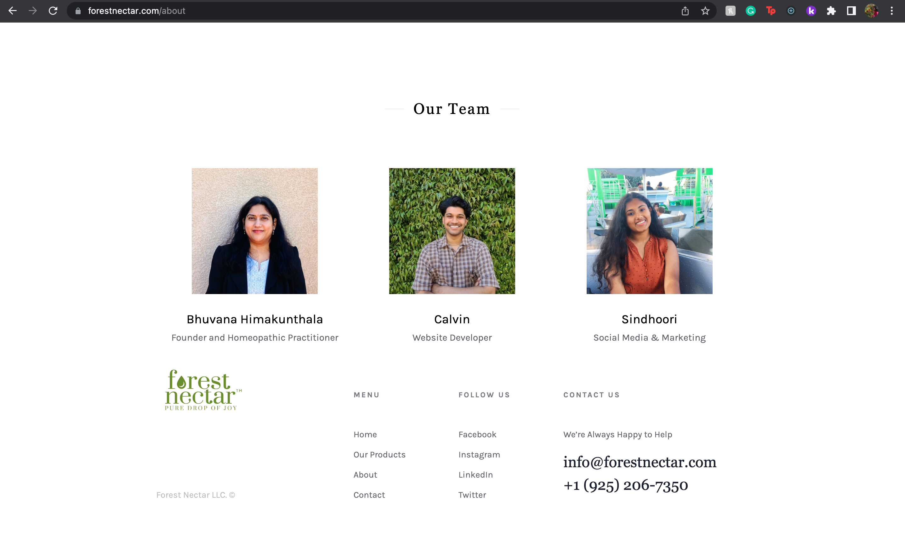

Sindhoori Kalavacharla
Sindhoori Kalavacharla is an undergraduate student at the University of California Riverside. She attended Dougherty Valley High School in the bay area and has lived in all over the bay area her whole life. She has a strong passion for business marketing, social media management, advocacy, art, entrepreneurship, theater, and Indian Classical dance and has incorporated her love for all her passions in all aspects of her life. She has been practicing Bharatanatyam (a form of Indian classical dance) for over 15 years, has performed all over the bay area, and completed her Bharatanatyam Arangetram (full-length solo debut) in 2019. At the age of 19, She has crossed over 6000 hours of Bharatanatyam training, and practices, and has had over 100 stage performances.
Throughout High School, Sindhoori was very active in her school, community, and in her interests. She was a founding member, Vice President for 2 years and President for one year of the Ethnic dance club in her school. She was also a co-marketing head of the Generation She chapter at Dougherty Valley High School. She combines her love for dance and social media marketing as the Head of Tech and Marketing for Namaha Foundation for the Arts (A San Ramon-based non-profit) as well as a marketing and social media manager for Ushanjali School of Dance. She is also the co-founder of a teen-run nonprofit organization called She Helps Her, striving to create a community of women supporting women to make a healthier world for all. She is a former board member and now an advisory board member for FemTruth Youth (a non-profit in California), was a marketing and media coordinator at Tri-Valley WEB, and an ambassador for both GenerationShe and ladkilove! Before graduating High School, she was the Chief Sales Officer at Ezypull and was a sales associate at Reusii - as part of a Junior Achievement Company program. To work on building her skills, Sindhoori worked as a marketing intern for Forest Nectar (a small skincare company), and for Colibri Marketing making tik toks and social media posts.
On her theater side, Sindhoori took part in her school's play and musical her senior year. She played Ms.Boddy in Dougherty Valley High Schools' production of Clue and was the Moderator/Ensemble member in Dougherty Valley High Schools' production of High School Musical. She also shows her love for acting in her dance through dance drama productions and more. Prior to high school Sindhoori took part in small plays starting in kindergarten through elementary school and reconnected with it in High School.
Now in college, Sindhoori works part-time at Narika, a domestic violence non-profit as a social media coordinator managing their Instagram, Facebook, Twitter, LinkedIn and their official website. She also works as a marketing and media freelancer also creating marketing campaigns, running social media, designing websites, creating marketing templates, and more for small businesses, nonprofits, and more.
Sindhoori hopes to keep pursuing her passions by majoring in Pre-Business going into Business Marketing, continue to advocate women’s health, as well as explore and improve on her dance and other interests.
Experience
Social Media Coordinator
• Updated website for Narika
• Managed social media platforms
• Created marketing material
Co-Director and Co-Founder
• Plan feature ideas and improvements, organize a yearly timeline, arrange events, and drives, work closely with all core team members, oversee the overall organization
• Design, create and maintain the website with regular updates, create media content to put on social media
• Contact local homeless shelters, partners, and schools to run drives
Advisory Board Chair
• Manage website design
• Manage merchandise on official website
• Create social media content for organization
Education
UC Riverside
Portfolio
 



 